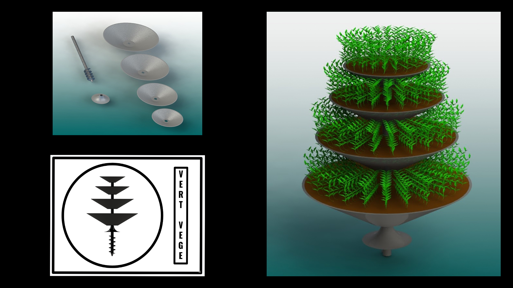

Jordon Donovan
- Graduate Diploma of Teaching (Secondary)
- Diploma of Science (Engineering)
biography
Kia Ora, I am Jordon Donovan and I will soon graduate as a secondary school teacher specialising in hard materials technology. I have an interest in all things mechanical and prior to my studies at The University of Waikato I was a trade qualified fitter and turner.
Although design is not a passion of mine, I have developed an interest in the history, techniques and technology utilised in the world of design while engaging with the design papers I have completed at Waikato. Throughout my trade, there were multiple instances where I would interact with products and components in the manufacture, maintenance, or repair stage of their life cycle with little regard to the investment of time that a designer or design team has put in to refine it to a functional item. Through design study, it has been highly interesting looking at the world through a new lens of conception, function, development, and refinement.
project description
The Vert Vege project is aimed at designing a low-cost garden utilising an Industrial design perspective. The Vert Vege grow unit is a vertical tiered garden that aims to provide prospective gardeners the ability to engage with domestic gardening at a low price point. Current garden units that are commercially available are frequently short lifespan products that perish easily in the outdoors or are too highly priced for the average domestic gardener to justify the investment. Additionally, current garden products at both ends of the financial spectrum are typically made from environmentally unsustainable materials. The intention of Vert Vege is to produce a garden unit that is durable yet environmentally conscious. A Vert Vege unit has a minimalistic number of components for easy, low-cost manufacture. The unit is intended to be an easily assembled and deconstructed product that can be moved from location to location, while leaving little to no environmental impact after use.
CAD modelling has been a primary tool used in the development and refinement of the project and it was intended that a 1:1 scale model be created from foam or cardboard to aid visualization and functional attributes of the product. Unfortunately, this has been hindered by the pandemic and alert level fluctuations this trimester.
Vert Vege

For more information contact us
Email: degreeshow@waikato.ac.nz
Faculty phone: 0800 924 528
Faculty information: cs.waikato.ac.nz